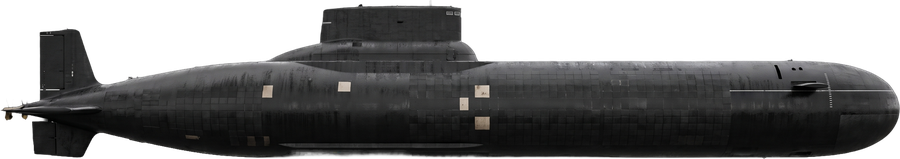
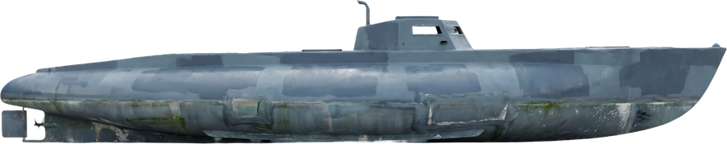
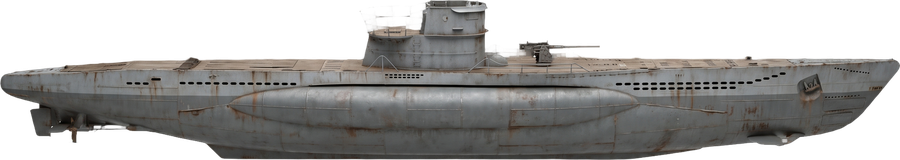
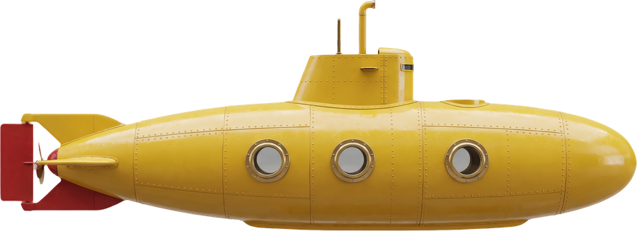
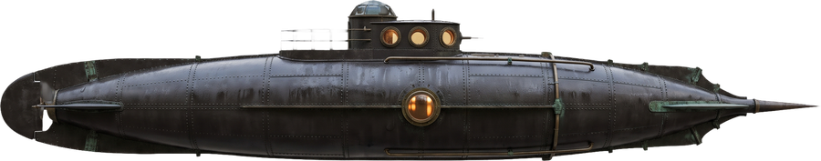
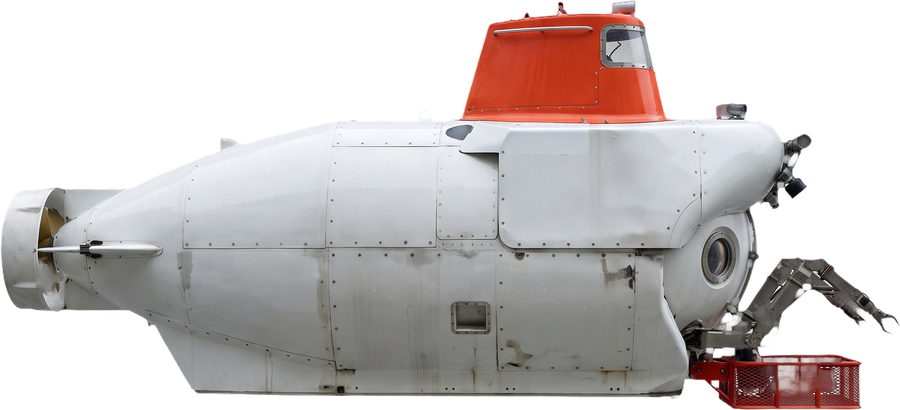
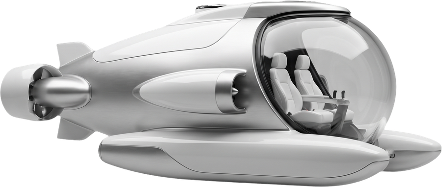
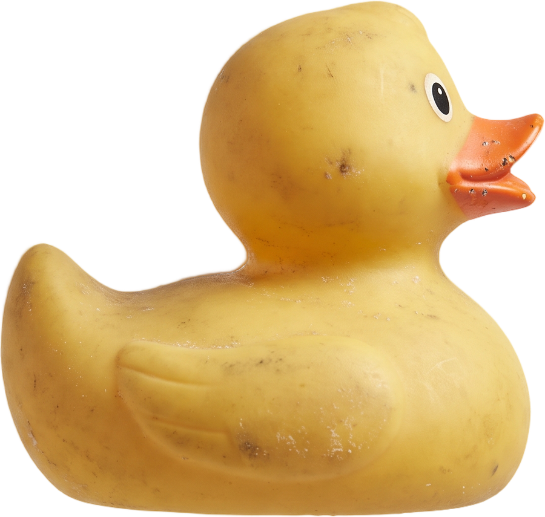
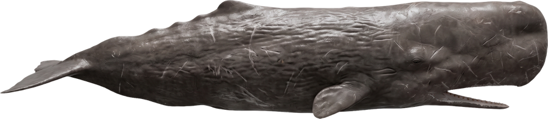

Typhoon Class
Narco Sub
Typhoon Class
U-96
Yellow Submarine
Nautilus
Alvin
Triton
Duck
Sperm Whale27 motifs, 4 visual styles. The photo style is real photographs, not drawings — double-click any tile to see it large, with its story.
In January 2026 Portuguese police intercepted a home-built semi-submersible 230 nautical miles off the Azores, carrying an estimated nine tonnes of cocaine, the largest such seizure in Portuguese history. Four men had spent weeks crossing the Atlantic inside the cramped hull.